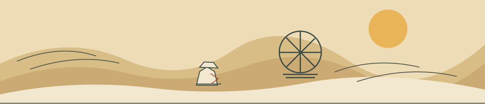

Experimental reference / clear-line desert
Sable UI
Fine contours, open paper, and flat dune color let the landscape stay ahead of its interface.

Mask Collection
Masks read as silhouettes first. Color stays inside a thin, steady contour.
MAKAKWORN
IBEXFOUND
BEETLEFOUND
HARERUMOR
4 OF 12 FOUNDCOLLECTION
Quest Journal
One active entry gets room to breathe; the index remains a slim travel mark.
06CLAN
WALKER
—
DONE 02
WALKER
—
DONE 02
A Place to Call Home
Find the machinist near the old hull. She knows which parts can still cross the western flats.
LAST SEEN · EYRIE
TRAVEL STORYOPEN JOURNAL ↗
Desert Map
The landscape remains the map. A single rust route and pale marker carry the next decision.
THE WASH
34.2 N · 71.8 W
○ YOU ARE HERE— TRACKED DESTINATION